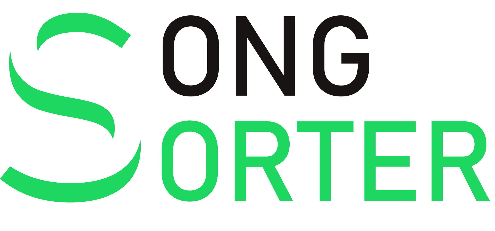

About

I attended UCSD from the Fall of 2016 to the Spring of 2020 to earn a degree in Cognitive Science with a specialization in Design and Human Computer Interaction. I competed on the Division I men's rowing team for the first three years of my time in San Diego, but unfortunately wasn't able to continue due to a shoulder injury. I spent my time in University seeking out ways to not only improve my technical skills in the world of software but also grow my knowledge on the more abstract subjects that surround software functionality and design
I have always loved software development since my very first computer science class in high school. I began my post-college journey with a software developer internship and, through pure happenstance, ended up as a Salesforce developer. Since then, I have never stopped enjoying working in the ecosystem and learning more about it every day. It feels like there are always new and exciting changes on the horizon, and I see no shortage of learning opportunities and fun projects in the near future.
When I’m not working, you can find me backpacking, golfing, snowboarding, at the lake with friends, or learning different technologies to build projects that bring me joy (check out the Projects tab for more on that).
Projects
Disclaimer : Many of the projects below are outdated and from many years back. I still plan on leaving them up so that I can always look back on all the little projects I took on and all of the joy that the learning brought me. I have added dates to all of the projects and will sort them by most recent.

Mid 2023 - Current
In addition to my full-time position as a Senior Salesforce Developer at Niche, I am starting to take on some freelance work for a consulting firm that Niche hired to implement new financial software into our Salesforce org. While I don't anticipate leaving my in-house developer role to become a consultant anytime soon, I'm excited about the opportunity to tackle new challenges with entirely different use cases than my current position.

Early 2023 - Mid 2023
In early 2023, I found myself with a bit more free time on my hands and wanted to take on a challenge that wasn't work-related. I decided to try my hand at iOS development.
For about a month, I focused on learning some of the fundamentals,
getting familiar with the syntax, and walking through some tutorials to understand the workflow that iOS developers typically follow. Within a month of downloading Xcode,
I uploaded my first iOS app to TestFlight. It felt great to be able to navigate the whole process comfortably. Although the code isn't pretty,
and any seasoned iOS developer could tell that this was my first attempt by looking at it, it was more of a proof of concept for myself that I could learn the process from start to finish.
I don’t plan on publishing the app on the app store, but you can find a link to the public beta through TestFlight here.
The app is designed to create custom bar crawls that enable users to explore a night out in an unfamiliar city or find new watering holes close to home. It uses the Google Places API to locate venues for the crawls and retrieve their information,
MapKit to display them to the user, CoreData to store user’s saved crawls, and CoreLocation to determine the user's location and offer customized crawls.

Mid 2021:
In my freetime, I have started to learn about the React framework and try to get comfortable enough with it to create an application for a real world use case. I am currently developing a weather app using React. The application contains multiple responsive components, including a header, input field for location, tiles to preview different day's forecasts, and a main tile to display the selected day's weather data in detail. In lieu of the fires along the west coast in September of 2020, I plan to integrate air quality reports in later versions. The application is currently using the openweathermap.org API to recieve real-time weather data as well as the mapquest API to handle location requests.
Update 9/26/20: The site is LIVE! You can check it out here.
Update 10/04/20: I added a helpful feature allowing the website to use the users current location when the site first loads, then allowing them to change it as they please. Fun right? Well unfortunately, the free version of the weather API doesn't allow connections from https origins, so I forced my site to be served from http. That leads to the problem of getCurrentPosition() being depreciated for non-secure origins, rendering this feature effectively useless in production. I'm left with the choice of paying much more than I'm willing for a premium key for the weather api, or settling for no automatic location being set for the user. For now, this feature will lay dormant while I look for a workaround.
Update 5/11/2023: Finally getting around to touching up my portfolio after a few dormant years. The site above is no longer live and doesn't pertain to my current professional interests.
Mid 2020 - Mid 2021
As part of the software development team at Palo Alto Health Sciences, I have worked with two other software engineers on migrating the company's data and functionality over to Salesforce. Although when I entered the company in June 2020 I had no knowledge of Salesforce, I have been working hard to learn the ins and outs of developing in the Salesforce environment and making the transition as smooth as possible for my coworkers. Salesforce's Trailhead has been an amazing source for instruction on all the areas that are new for me. You can check out my progress here. Currently, we are working to develop Lightning Web Components to build pages and functionality using data from our company's servers as well as data stored within Salesforce. These web components are supported by api's that we have written and will mantain to support the transfer of data from our servers to Salesforce. The project will most likely be ongoing for the foreseeable future as we work to migrate current patient data onto the platform and create a useful interface for the company.

Early 2020 - Mid 2020
With all of the free time I had available due to COVID-19 cancelations, I took the opportunity to build a website using Python, HTML, CSS, JS, Flask, and Spotify's API with my brother. The website's purpose is to take all of the songs you have "liked" on Spotify and sort them into different playlists based on genre. We then used the Flask framework to develop the algorithm into a functioning website using HTML, CSS, and JS. We host and manage the website on a Linux server. Check out Song Sorter here.

Mid 2020
During my time as a software development intern at Palo Alto Health Sciences I was assigned a project to develop an Android app for alumni of the Freespira treatment who wanted access to the auditory cues used during treatment to help them control their breathing. This was my first project developing an Android application. After finishing up the Android app, my supervisor and I discussed the possibility of me developing a web app, for users without access to an Android tablet or phone. I created a web version that would automatically scale to either a mobile device or computer. I am currently working on adding a visual aspect such as an expanding and shrinking gif to accompany the tones. The application is cloud based and hosted on Google Cloud. The goal is to have the web application available to select alumni by the end of July 2020 with a full backend implemented to allow for authentication of users and cross-device tracking of specific user behavior.

Early 2020
During my final quarter at UCSD, myself and a group of 4 others were tasked with creating a prototype for a mobile app that would help out the population during quarantine. We used Figma for the wireframe and prototype and the Adobe creative cloud for images and icons. You can check out the prototype here.
Late 2019
Another group project that I took part in during my time at UCSD was a data science project. We decided to analyze available health data relating it to city population and population density. You can check out that work here.

Early 2019
For my first design centered project, I took part in a team of three to design a wireframe for an application that would simplify the scheduling and information dispersal of rowing teams, from junior to olympic. This was my first time using HTML and CSS and the project helped me get an understanding of how to use the two in conjunction and how to bring me prototypes to life

Late 2019
During the final quarter of my education at UCSD, I was helping a friend learn the basics of object oriented programming. He had almost no experience in programming of any kind. We decided to build a deck of cards for starters to learn the basics of creating objects and methods. We continued by implementing different card games to get him exposure to different data structures and very basic algorithms. You can check out our weekend crash course on GitHub here.